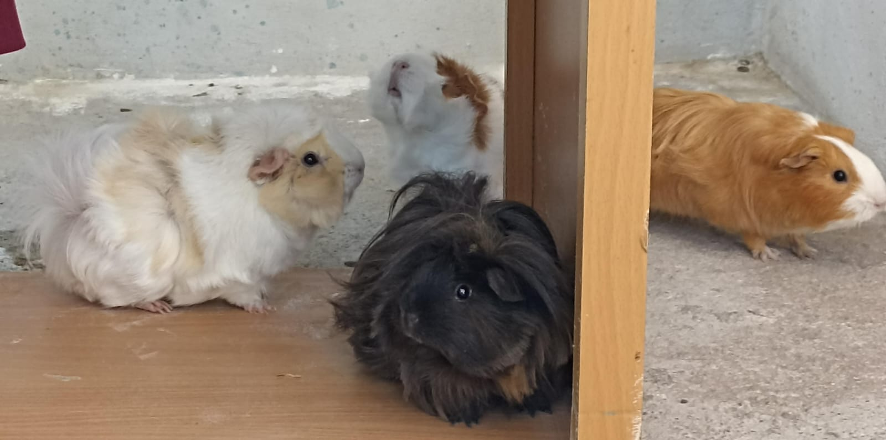
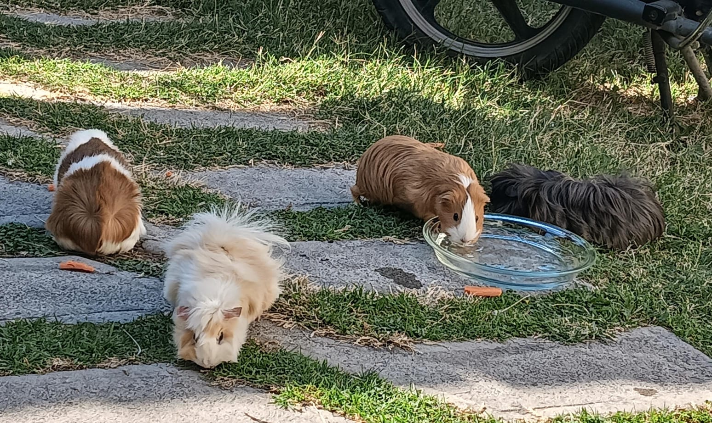

Las cobayas tienen un "punto dulce" detrás de las orejas donde les encanta que las acaricien, ¡y a menudo ronronean cuando lo haces!.
Les encanta vivir en grupos, como si tuvieran su propio club de amigos. ¡Siempre están charlando entre ellas con unos ruiditos súper graciosos! Cuando están contentas, hacen un sonido que se parece a un "cui cui cui". ¡Es como si estuvieran cantando de felicidad!
Imagina que tienes una cobaya en casa. ¡Sería como tener un miembro más en tu familia! Le encantaría jugar contigo y con otros amiguitos cobayas. ¡Nunca se aburriría!
¡Son tan tiernas que te enamorarás de ellas a primera vista! ¿Sabías que las cobayas son como pequeños contorsionistas? Les encanta adoptar posturas raras y divertidas. A veces, se estiran tanto que parecen un croissant gigante. ¡Es como si estuvieran haciendo yoga!